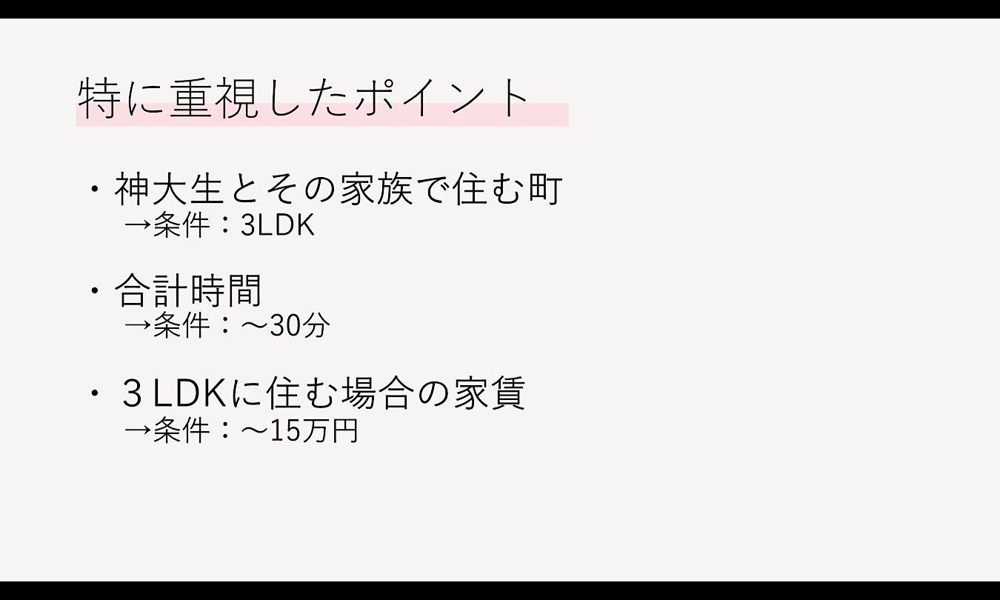
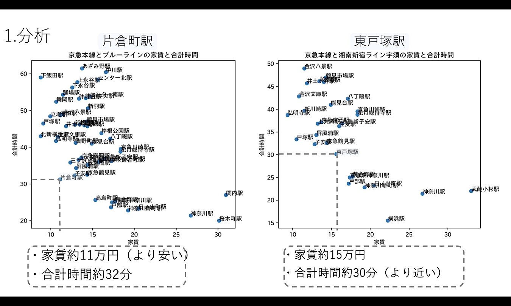
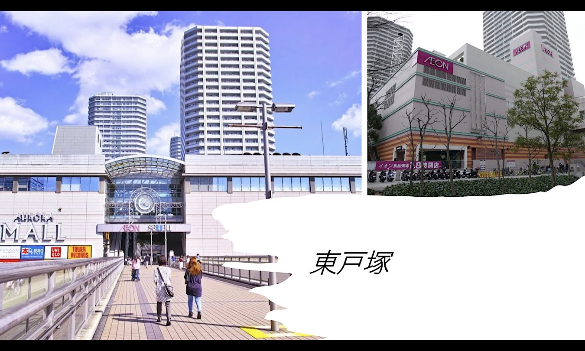
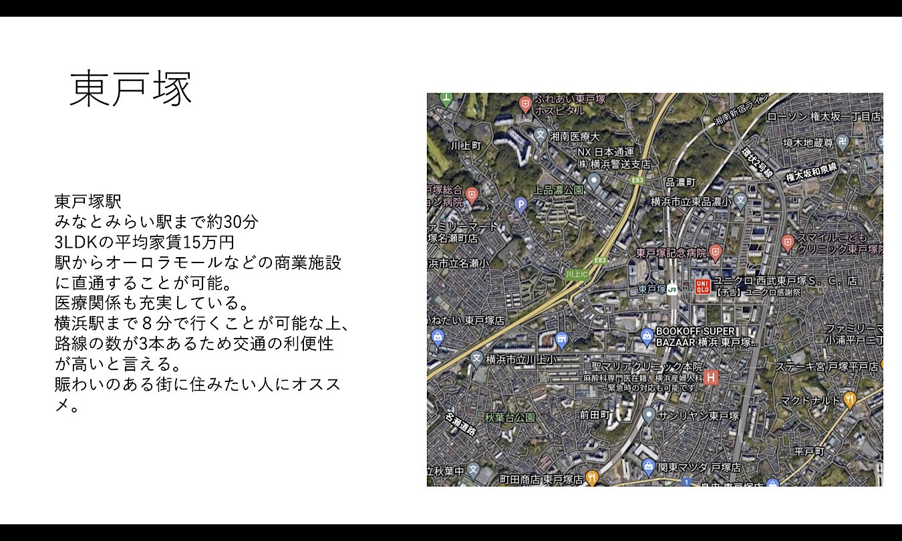
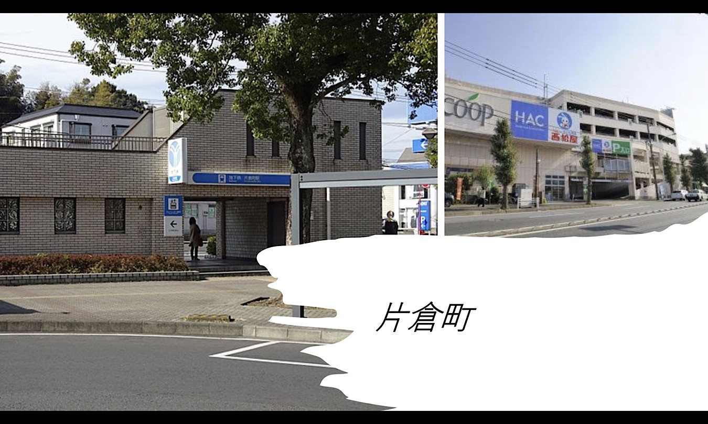
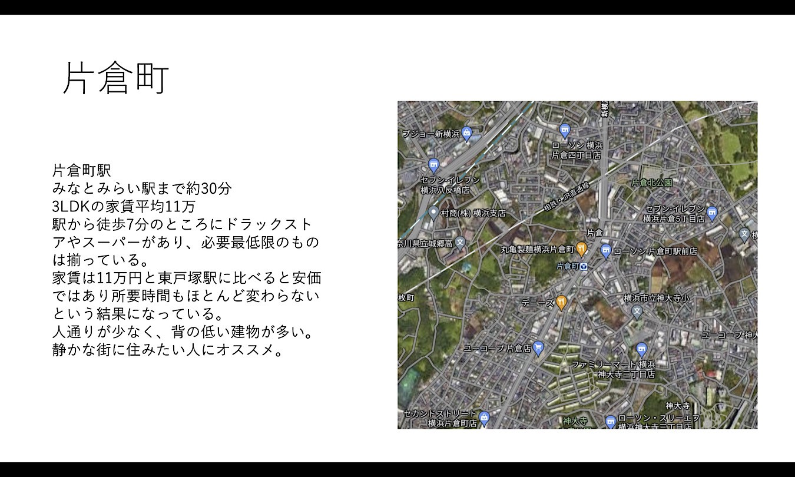
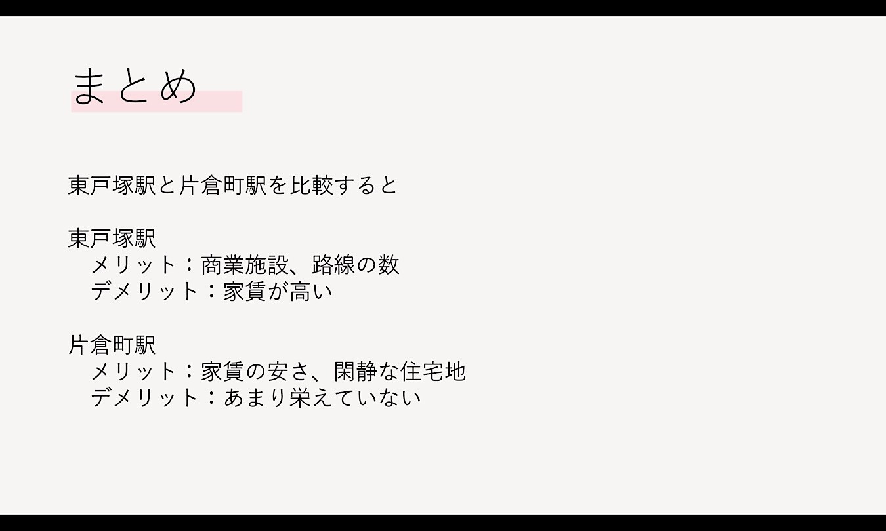

ホーム
デザイン演習Ⅰ・Ⅱ
デザイン演習 賃貸情報の分析 発表資料
今回、私たちの班では、新入生にオススメする駅の発表を行った。

７班では、「神大新入生とその家族で住む町」をテーマに、3つの点を重視して分析・調査を行った。
１つ目は、家族で住めるように3LDKの家を対象に分析する点、
２つ目は、合計時間が約30分以内である点、
３つ目は、家賃が約15万円以内である点である。

京急本線のデータを基に、他36路線の家賃と合計時間の分析・調査を行い、
片倉町駅と東戸塚駅を特に注目した。
片倉町駅は、家賃が約11万円で、合計時間は約32分。
東戸塚駅は、家賃約15万円で、合計時間は約30分である。

東戸塚駅をさらに詳しく見てみる。

東戸塚駅の特徴は画像の説明の通りである。

片倉町駅をさらに詳しく見てみる。

片倉町駅の特徴は画像の説明の通りである。

まとめとして、東戸塚駅と片倉町駅を比較すると、上の画像のメリット・デメリットが発見できた。